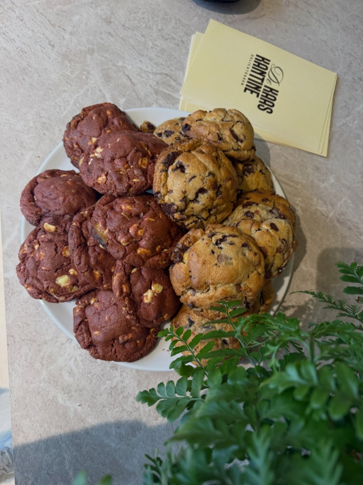

Het menu
Specials, klassiekers, koeken en drinken. Alles rijk belegd en met liefde gemaakt.
Specials
De broodjes waar ze om bekend staan. Brandalarm en Krokante Karel zijn er ook in halal.

Rib eye, truffelmayonaise, gepofte tomaat, rucola, gebakken ui en rode ui.
Malse hete kippendij, chipotlemayonaise, rode ui en gebakken ui.
Pulled chicken, little gem, limoenmayonaise, rode ui, gebakken ui en bosui.
Brie, honing-mosterdmayonaise, rucola en walnoten.
Mortadella, stracciatella, pesto en pistachecrumble.
Tonijn met rode ui, mosterd, ketchup, mayonaise, kaas, chiliolie en gegrilde paprikapoeder, afgemaakt met gesmolten kaas.
Gefrituurde kippendij, coleslaw, uiencompote en srirachamayonaise op een brioche.
Pastrami met rucola, truffelmayonaise, rode ui en srirachamayonaise.
Langzaam gegaard, zoet en mals stoofvlees met krokante kentang, bosui en een romige saus.
Klassiekers
Vertrouwde broodjes, eerlijk belegd.

Broodje bal in jus met huisgemaakte pindasaus.
Zoet
Koeken van Dough Department, vers verkrijgbaar bij De Kaaskantine.

The Original NYC Cookies vanuit Alkmaar. 140 gram, knapperig van buiten en gooey van binnen.
Drinken
Frisdrank, kombucha en bio-limonades. Voor een goede kop koffie kun je er ook terecht.
De koffiekaart en de koffieprijzen staan niet in het online menu en zijn daarom hier niet getoond.
Menu en prijzen zijn overgenomen van de menukaart in hun Instagram-highlights en hun bestelpagina en kunnen wijzigen. Bij allergieën graag even navragen in de zaak.
Zin gekregen? Bestel af
Bestel via hun eigen bestelpagina en haal je broodjes op aan de Hofstraat 4.
Bestellen